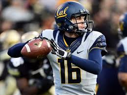

The California Golden Bears football team is the college football team of the University of California, Berkeley. The team plays its home games at California Memorial Stadium. Memorial Stadium was built to honor Berkeley alumni, students, and other Californians who died in World War I and modeled after the Colosseum in Rome. Memorial Stadium was named one of the 40 best college football stadiums by the Sporting News. The team also has produced two of the oddest and most memorable plays in college football: Roy "Wrong Way" Riegels' fumble recovery and run toward the Cal goal line in the 1929 Rose Bowl, and The Play in the 1982 Big Game with the winning kickoff return after five laterals. The current head coach is Sonny Dykes, who began his tenure at Cal on December 5, 2012.